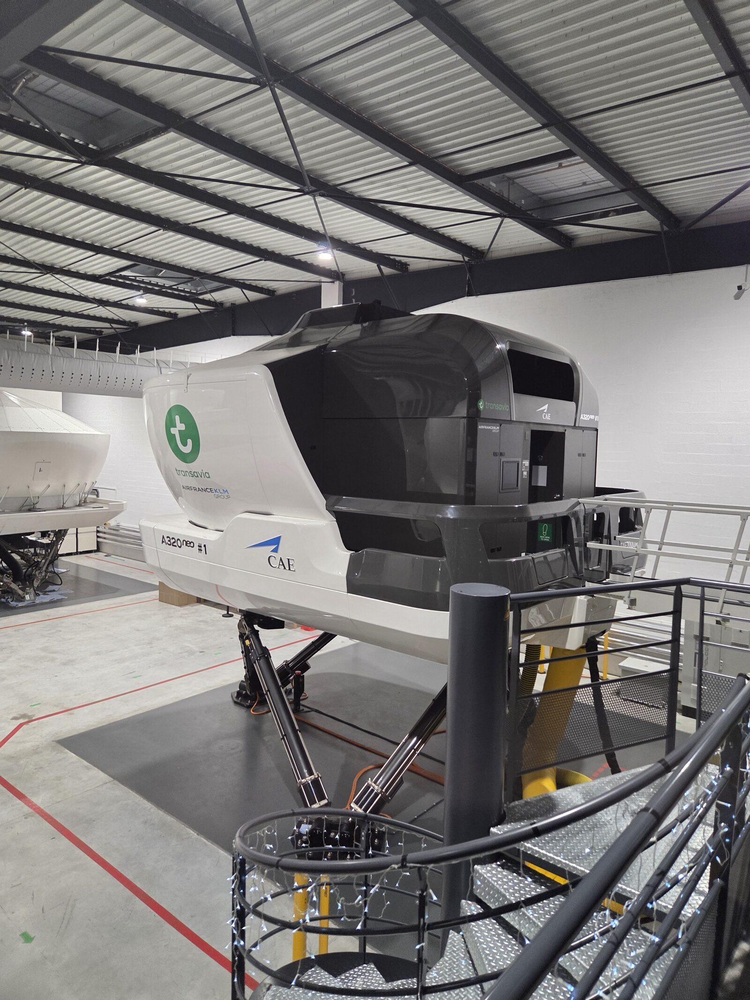
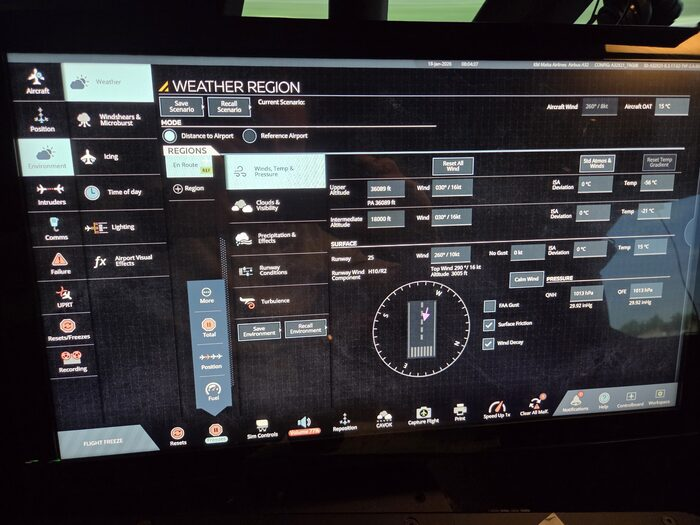
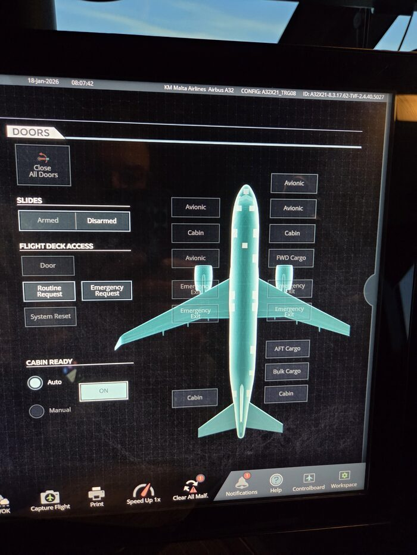
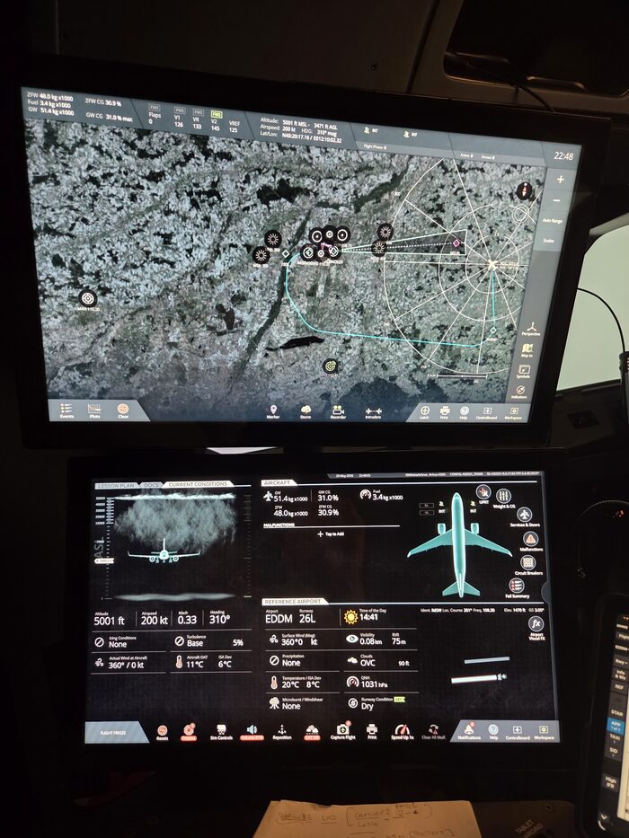
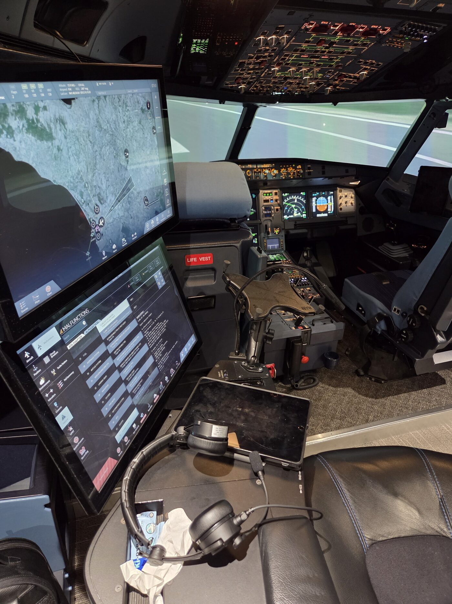
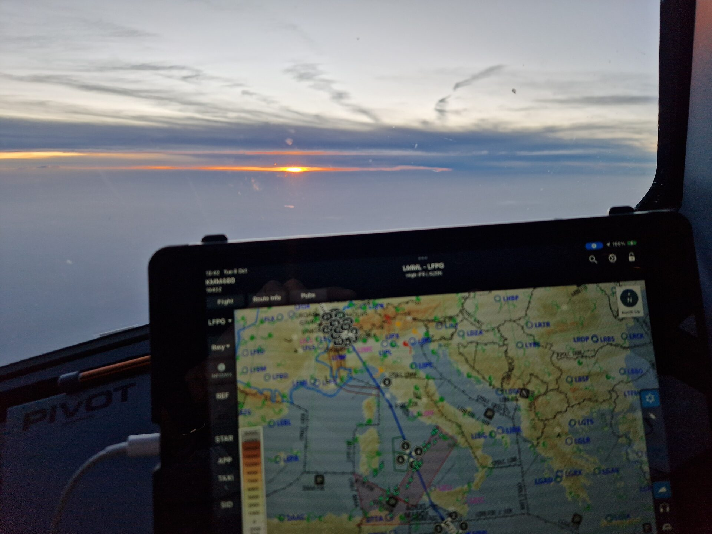

SimSynch™ gives A320 TREs and TRIs a structured, document-backed platform to plan sessions, observe behaviours, grade competencies, and produce compliant debrief records — replacing paper forms and spreadsheets with a tool designed around how instructors actually work.
SimSynch™ isn't a mockup of what simulator training could look like — it runs session to session on a CAE 7000XR-series A320 full-flight simulator, the same box instructors use for LPC/OPC and recurrent EBT checks.

SimSynch follows the actual rhythm of a simulator check — not an abstraction of it. Every step maps directly to what an instructor does in the bay.



The simulator's own Instructor Operating Station — SimSynch™ runs alongside it, on a separate device, without touching sim control.

Concrete improvements in how simulator instruction is prepared, delivered, and documented.

Most simulator training programmes still rely on paper forms, spreadsheets, and end-of-session recall. Here's what changes.
| Capability | Paper / spreadsheet | SimSynch™ | Generic LMS |
|---|---|---|---|
| Session plan built from real scenario bank | — | ✓ | — |
| Auto-OB attachment from uploaded programme PDF | — | ✓ | — |
| Real-time OB grading (no batch save) | — | ✓ | — |
| ORCA controlling-grade enforced automatically | — | ✓ | — |
| MAL = 3 enforced (not configurable away) | — | ✓ | Partial |
| Competency radar + bar + Venn from graded OBs | — | ✓ | Partial |
| Session debrief auto-generated at end of check | — | ✓ | — |
| Cross-references QRH / FCOM / OM-A | Manual | ✓ | — |
| Candidate history and trend tracking | Spreadsheet | ✓ | ✓ |
| A320-specific scenario taxonomy | — | ✓ | — |
SimSynch™ is operational today at KM Malta Airlines.
Interested in deploying it for your training programme?
SimSynch™ is a trademark of KM Malta Airlines. Built on Supabase + Next.js. Hosted at simsynch.com.